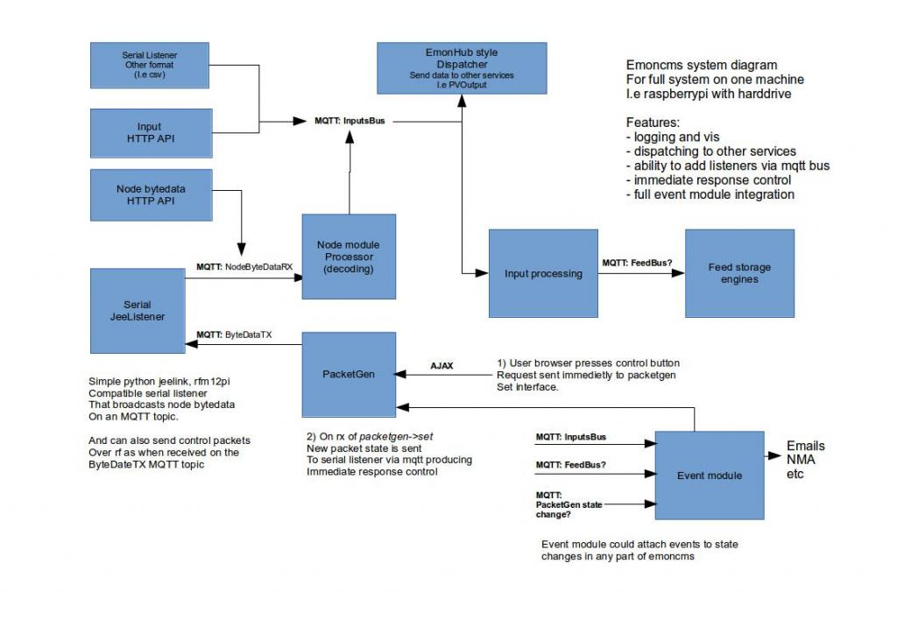

We've discussed the idea of using MQTT within emoncms several times before but the idea came up again during discussion about the best way to implement node decoding in emonhub. Emoncms could provide some of the same features of emonhub ie multiple listeners and multiple dispatchers in an elegant way if it incorporated mqtt message queues. It would also provide benefits for control as initially explored here last December https://github.com/emoncms/development/tree/master/experimental/control/nodejs_websocket_thermostat
Here's a system diagram of how it could look like:

Here's an initial working concept with working serial listener and node processor, with step by step setup guide: https://github.com/openenergymonitor/documentation/blob/master/Modules/RaspberryPI/FullStackHDD/FullStackHDD.md
This approach needs a fair bit of work to make it a really nice solution, If you think this is the way to go it would be great to get some help with making it happen, in particular:
- Integrating the event module by running it as its own process subscribed to the applicable mqtt topics.
- Writing a process for the emonhub style dispatcher for sending data to other services such as a remote emoncms or another service entirely such as PVOutput or ThingSpeak
- Creating raspberrypi module style emoncms gui for the new python based listener setting the rfm12pi radio settings.
- Managing all these processes, a process status interface in emoncms?
Richard Hatfield and I have also been doing work on setting up Emoncms + MQTT + scheduler for heating control, the raspberrypi software setup guide for the configuration so far is here:
https://github.com/openenergymonitor/documentation/blob/master/Modules/RaspberryPI/FullStackHDDScheduler/FullStackHDDScheduler.md
There are also some new related MQTT mini examples in the emoncms/development repository: https://github.com/emoncms/development
Interested to hear peoples thoughts.
Re: Development: Emoncms + MQTT
I've not a great deal of knowledge about MQTT, but would this then allow for greater integration with Node-Red via MQTT nodes?
If so, wouldn't Node-Red provide a ready made flexible solution for handling events instead of developing the event module?
Recent additions to Node-Red include an 'Email' node, 'pushbullet', 'pushover', 'nma', 'prowl', 'twitter', and as of today 'pusher' which opens up a whole new level of opportunities.
Paul.
Re: Development: Emoncms + MQTT
Yes maybe! although I havent done much with node-red, Glyn's explored it a bit I think. There's some good work done here by Dom Bramley's of IBM on documenting a openenergymonitor + jeenode + nodered integration
Part 1: https://www.ibm.com/developerworks/community/blogs/B-Fool/entry/home_aut...
Part 2: https://www.ibm.com/developerworks/community/blogs/B-Fool/entry/node_red...
Part 3: https://www.ibm.com/developerworks/community/blogs/B-Fool/entry/sending_...
Re: Development: Emoncms + MQTT
Don Bramley's blog makes good reading, however it is not totally suited to running node-red and emoncms on the same device, because it currently relies upon a node-red 'serial node' to listen for input data on /dev/ttyAMA0 which of course is the same bus used by emoncms, and you can't have two devices connected to the same serial bus at the same time.
To work and integrate, emoncms would need a MQTT output for each input, which could be picked up by node-red.
Paul
Re: Development: Emoncms + MQTT
I'm using a modified version of Dom's scripts to take data from my RFM12PI into Node-Red.
I must admit to loving the ease of adding additional outputs and the ability for node-red to add event messaging.
Before much time is spent developing a bespoke version I would encourage you to take a look at NodeRed.
Re: Development: Emoncms + MQTT
MQTT is a topic being discussed on emonHub github currently and NodeRed has been mentioned. Although I currently know very little about either I read good things about NodeRed and at the very least would expect NodeRed integration via a custom dispatcher and maybe a listener too.
My guess is NodeRed may not be a total solution for all users so would expect a need for emonHub (oem gateway) to remain and maybe some NodeRed integration in emonHub may have other gains.....
@ ukmoose - Is it possible to see the script you are using, is it on github ?
Re: Development: Emoncms + MQTT
I am new here but saw this thread and am very interested in MQTT as a messaging protocol. I am already using it extensively in my home automation software, including using it as a control signal for Arduino slaves with sensors and output relays - for switching loads etc.
I also use it for all my notifications - using a python script called mqttwarn (https://github.com/jpmens/mqttwarn). This could be a light weight alternative to something like NodeRed as has been discussed here.
Re: Development: Emoncms + MQTT
This is interesting! - i've not read it properly yet, but i've been working on something along the same lines.
I've got another base next to my RF which talks to emoncms.org - I tried to get it receiving the transmissions from my emonTx & 28 sensor nodes and putting them into MQTT, but it wouldn't work properly - too much for an ATMega328 to handle I think, so i've currently got the 328 spitting the data over serial, and I have some ruby code reading that, parsing it and spitting it into mqtt topics.
I've then got various subscribers, which take that and put it into redis for quick access of the latest values and mysql for historic logging.
I've then started a basic web interface, which lets me control my wireless mains sockets and garden watering by publishing to mqtt topics and having some Nanode RF's subscribed to those topics to action the requests.
I'm also going to write a little script to subscribe to the sensor topics and periodically send to emoncms.org.
Ian